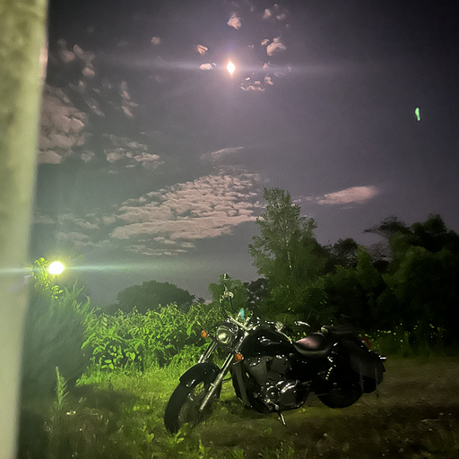

こんにちはー！
Hisaっていいます、よろしくお願いします 🙇♂️
名前 (ふりがな) : 久末 瑠紅（ひさすえ りゅうく）
名前の意味 : 長男で初めての宝物だからどこかの国のお宝を元につけてくれたそうです
ニックネーム : Hisa（ひさ）
🎂生年月日 : 2000年1月5日
🗾出身地 : 北海道 札幌市
🏫所属 :
• クリエーションライン株式会社 Agile CoE（エンジニア/組織開発者）
• 公立はこだて未来大学 博士後期課程 システム情報科学領域
モットー・座右の銘 :
• 人生は楽しんだ者勝ち
• やる気と勇気と愛があればなんでもできる
👦憧れている人・尊敬している人 : 挑戦して結果を出した人
16Personalities : ENFP（運動家）
趣味 : スノボ、バイク、セーリング、ドライブ 、海外旅行とかとか
📚資格・特技 :
• 資格
◦ 普通自動車第一種・大型自動二輪 運転免許
◦ 応用情報技術者試験
◦ CRLA International Tutor Training Program Certification - Level 1
◦ 文部科学省 成長分野を支える情報技術人材の育成拠点の形成 enPiT 2 修了
◦ 丙種危険物取扱
◦ CN100: Docker Containerization Essentials
◦ CGエンジニア検定ベーシック
• 分野
◦ アジャイル開発
◦ 組織開発
◦ Low-rate DoS攻撃（博士の研究分野）
◦ ネットワーク基礎
◦ 学習理論（チュータリング分野）
◦ コミュニケーション理論
💪自分の強み : 考え方について考えれるところ
💛得意なこと : ロジカルに物事を考える
今後やってみたいこと : 新しい分野の知識と経験を獲得したい！
20代に達成したいこと : とにかく遊ぶ！そのために挑戦して学んで稼ぐ！
自由に一言！ :
これまで、いろんな分野に触れてきたので、多角的に物事を見るのは得意かなーと思ってます！
いろんな観点で貢献していければと思いますので、どうぞよろしくお願いします🙇♂️
0_自己紹介
Created by 三國 紘斗 / Hiroto MIKUNI on Wednesday, April 3rd, 2024
HisaThursday, October 10th, 2024 at 4:18:12 AM GMT+00:00
😨1
🫡1
🔥2
🏂1
🏍️1
⛵1
🚗1
👍1
💛1

新美昂正Thursday, October 10th, 2024 at 4:48:58 AM GMT+00:00
名前 (ふりがな) : 新美 昂正（にいみ こうせい）
ニックネーム : こーせー
🎂生年月日 : 2001年4月25日
🗾出身地 : 愛知県 知多半島
🏫所属 :
• 公立はこだて未来大学 情報アーキテクチャ領域情報システムコース
モットー・座右の銘 :
• 楽じゃなく楽しく
👦憧れている人・尊敬している人 : 兄
16Personalities : ENFJ（主人公）
趣味 : ドライブ、音楽
📚資格・特技 :
• 資格
◦ 普通自動車免許
💪自分の強み :適応力、 コミュニケーション、ドキュメント作成
💛得意なこと : 人と仲良くなる（日本に限らず！）
今後やってみたいこと : 経験したことないスポーツ
20代に達成したいこと : いけるだけ旅に行く
自由に一言 : 来年から本格的に活動する予定ですのでその際はよろしくお願いします！
ニックネーム : こーせー
🎂生年月日 : 2001年4月25日
🗾出身地 : 愛知県 知多半島
🏫所属 :
• 公立はこだて未来大学 情報アーキテクチャ領域情報システムコース
モットー・座右の銘 :
• 楽じゃなく楽しく
👦憧れている人・尊敬している人 : 兄
16Personalities : ENFJ（主人公）
趣味 : ドライブ、音楽
📚資格・特技 :
• 資格
◦ 普通自動車免許
💪自分の強み :適応力、 コミュニケーション、ドキュメント作成
💛得意なこと : 人と仲良くなる（日本に限らず！）
今後やってみたいこと : 経験したことないスポーツ
20代に達成したいこと : いけるだけ旅に行く
自由に一言 : 来年から本格的に活動する予定ですのでその際はよろしくお願いします！
🎶1
🚗1
💰1
👍1
💛1

Yutaka OnoderaWednesday, October 16th, 2024 at 1:35:46 AM GMT+00:00
名前 (ふりがな) : 小野寺 豊（おのでら ゆたか）
ニックネーム : デラさん、でらっち
🎂生年月日 : 1967年12月13日
🗾出身地 : 北海道函館市
🏫所属 : 株式会社iDea 技術顧問
過去の在職歴:
日立ソフトウェアエンジニアリング株式会社、ハコレコドットコム株式会社、株式会社ネットリソースマネジメント、フリーランス
出身大学:
早稲田大学教育学部教育学科教育心理学専修、公立はこだて未来大学大学院システム情報科学研究科、札幌医科大学大学院医学研究科
モットー・座右の銘 :
実るほど頭を垂れる稲穂かな
16Personalities : INFP-T（仲介者）
趣味 : 音楽鑑賞（特に60年代、70年代、80年代洋楽）、競馬、カラオケ、温泉巡り、車関連、料理
📚資格・特技 :
高度情報処理技術者（システムアーキテクト、ネットワークスペシャリスト、エンベデッドシステムスペシャリスト、情報セキュリティスペシャリスト）
Microsoft Certified Professional
英検準1級、TOEIC 870
普通自動車第一種運転免許
💪自分の強み :
各種情報システムのアーキテクチャ設計、開発、運用と全般的に、広く深く関わってきた長い経験
問題解決能力
思いやりの気持ち
💛得意なこと :
・競馬の蘊蓄語りと穴馬のピックアップ
・音楽の蘊蓄もたくさんあります
・10種類以上のプログラミング言語を使いこなす
今後やってみたいこと :
若いプログラマー、エンジニアをたくさん育て活躍させたいです
自由に一言！ :
佐々木CEOから請われ、技術顧問として着任させていただきました。
皆さんの技術的な、あるいはそれ以外の面でも、様々なご相談に乗り、これまでの経験を皆さんに惜しむことなく伝えて行きたいと思います。
皆さんのお父さんほどの年齢ではありますが、私の方からも若い皆さんの中に溶け込んで行きたいと思います。
どうぞよろしくお願いします 🙇♂️
ニックネーム : デラさん、でらっち
🎂生年月日 : 1967年12月13日
🗾出身地 : 北海道函館市
🏫所属 : 株式会社iDea 技術顧問
過去の在職歴:
日立ソフトウェアエンジニアリング株式会社、ハコレコドットコム株式会社、株式会社ネットリソースマネジメント、フリーランス
出身大学:
早稲田大学教育学部教育学科教育心理学専修、公立はこだて未来大学大学院システム情報科学研究科、札幌医科大学大学院医学研究科
モットー・座右の銘 :
実るほど頭を垂れる稲穂かな
16Personalities : INFP-T（仲介者）
趣味 : 音楽鑑賞（特に60年代、70年代、80年代洋楽）、競馬、カラオケ、温泉巡り、車関連、料理
📚資格・特技 :
高度情報処理技術者（システムアーキテクト、ネットワークスペシャリスト、エンベデッドシステムスペシャリスト、情報セキュリティスペシャリスト）
Microsoft Certified Professional
英検準1級、TOEIC 870
普通自動車第一種運転免許
💪自分の強み :
各種情報システムのアーキテクチャ設計、開発、運用と全般的に、広く深く関わってきた長い経験
問題解決能力
思いやりの気持ち
💛得意なこと :
・競馬の蘊蓄語りと穴馬のピックアップ
・音楽の蘊蓄もたくさんあります
・10種類以上のプログラミング言語を使いこなす
今後やってみたいこと :
若いプログラマー、エンジニアをたくさん育て活躍させたいです
自由に一言！ :
佐々木CEOから請われ、技術顧問として着任させていただきました。
皆さんの技術的な、あるいはそれ以外の面でも、様々なご相談に乗り、これまでの経験を皆さんに惜しむことなく伝えて行きたいと思います。
皆さんのお父さんほどの年齢ではありますが、私の方からも若い皆さんの中に溶け込んで行きたいと思います。
どうぞよろしくお願いします 🙇♂️
👍6
🔥5
💛6
🙇7
🏇4
🎶4
⭐3
🚗3
👏1
😍1

大成瞬平Friday, October 25th, 2024 at 12:50:46 PM GMT+00:00
初めましてです 🏋️♀️
しゅんぺいと言います。これからよろしくお願いします。
名前 ; 大成 瞬平（おおなり しゅんぺい）
ニックネーム : ぺいぺい
生年月日 : 2004年5月3日
出身 : 滋賀県
所属 : 公立はこだて未来大学複雑系
生みの親 :本田圭佑
資格、特技 : 普通自動二輪免許、第一種
話したり働いたり行動することが好きです。
好きなこと : サッカー
今後の方針 : 自分の知らないことに取り組んでいくこと。
一言 : まだ2年生でやりたいこととか極めたひとつのプログラムの特技とかはありませんが朝から夜越えて朝まで働くくらいの根性はあります。出来るとこは頑張ろうと思うので是非よろしくです。
しゅんぺいと言います。これからよろしくお願いします。
名前 ; 大成 瞬平（おおなり しゅんぺい）
ニックネーム : ぺいぺい
生年月日 : 2004年5月3日
出身 : 滋賀県
所属 : 公立はこだて未来大学複雑系
生みの親 :本田圭佑
資格、特技 : 普通自動二輪免許、第一種
話したり働いたり行動することが好きです。
好きなこと : サッカー
今後の方針 : 自分の知らないことに取り組んでいくこと。
一言 : まだ2年生でやりたいこととか極めたひとつのプログラムの特技とかはありませんが朝から夜越えて朝まで働くくらいの根性はあります。出来るとこは頑張ろうと思うので是非よろしくです。
👍4
💛3
⚽2

松井威Thursday, November 21st, 2024 at 9:56:58 AM GMT+00:00
 2
2 1
1
名前 (ふりがな) : 松井威(まついたけし)
名前の意味 : 意味は知りませんが、由来は「呼びやすいから」らしいです。
ニックネーム : まつたけ
🎂生年月日 : 2001/05/02
🗾出身地 : 北海道 岩見沢市
🏫所属 : 公立はこだて未来大学 システム情報科学研究科 博士前期課程1年
モットー・座右の銘 : 死ぬ気でやると死ぬのでやめな
👦憧れている人・尊敬している人 : 母
16Personalities : ISFP(冒険家)
趣味 : 楽器を弾く、かぎ針編み
💪自分の強み : 好きなことに没頭できる、人に恵まれている
💛得意なこと : 反省すること
今後やってみたいこと : 海外旅行
20代に達成したいこと : 結婚
自由に一言！ : 自分にできることを探して、貢献していけたらと思います。
名前の意味 : 意味は知りませんが、由来は「呼びやすいから」らしいです。
ニックネーム : まつたけ
🎂生年月日 : 2001/05/02
🗾出身地 : 北海道 岩見沢市
🏫所属 : 公立はこだて未来大学 システム情報科学研究科 博士前期課程1年
モットー・座右の銘 : 死ぬ気でやると死ぬのでやめな
👦憧れている人・尊敬している人 : 母
16Personalities : ISFP(冒険家)
趣味 : 楽器を弾く、かぎ針編み
💪自分の強み : 好きなことに没頭できる、人に恵まれている
💛得意なこと : 反省すること
今後やってみたいこと : 海外旅行
20代に達成したいこと : 結婚
自由に一言！ : 自分にできることを探して、貢献していけたらと思います。
2🏩1
1💩1
💰1
💊1
👍2

三國 紘斗 / Hiroto MIKUNIFriday, November 29th, 2024 at 11:17:31 AM GMT+00:00
チャンネル名を「002自己紹介スペース」から「0自己紹介スペース」に変更しました
三國 紘斗 / Hiroto MIKUNIMonday, December 2nd, 2024 at 8:43:56 AM GMT+00:00
チャンネル名を「0自己紹介スペース」から「0自己紹介」に変更しました

濱川彩夏Sunday, December 8th, 2024 at 5:37:30 AM GMT+00:00
 3
3 1
1
名前(ふりがな)：濱川彩夏(はまがわ あやな)
ニックネーム：なん
生年月日：2001年8月1日
出身地：沖縄県
所属：公立はこだて未来大学院 システム情報科学研究科 情報アーキテクチャ領域 修士1年
mbti：ENFP-T
趣味：音楽鑑賞、楽器演奏、映画鑑賞、アイドル
自分の強み：コミュニティに馴染む、何事にも臆せずチャレンジする、良いところを沢山見つける
得意な事：サックス演奏🎷、どこでも寝れる
今後やってみたい事：デジタルアート、海外旅行
20代に達成したい事：社会で認められる存在になる
自由に一言：お役に立てるよう頑張りますので、どうぞよろしくお願いします！
ニックネーム：なん
生年月日：2001年8月1日
出身地：沖縄県
所属：公立はこだて未来大学院 システム情報科学研究科 情報アーキテクチャ領域 修士1年
mbti：ENFP-T
趣味：音楽鑑賞、楽器演奏、映画鑑賞、アイドル
自分の強み：コミュニティに馴染む、何事にも臆せずチャレンジする、良いところを沢山見つける
得意な事：サックス演奏🎷、どこでも寝れる
今後やってみたい事：デジタルアート、海外旅行
20代に達成したい事：社会で認められる存在になる
自由に一言：お役に立てるよう頑張りますので、どうぞよろしくお願いします！
👍3
3💛1
🔥1
😎1
👊1
三國 紘斗 / Hiroto MIKUNIMonday, December 9th, 2024 at 4:56:13 AM GMT+00:00
がこのチャンネルの説明を「皆さんの自己紹介を共有するチャンネルです。」に設定しました